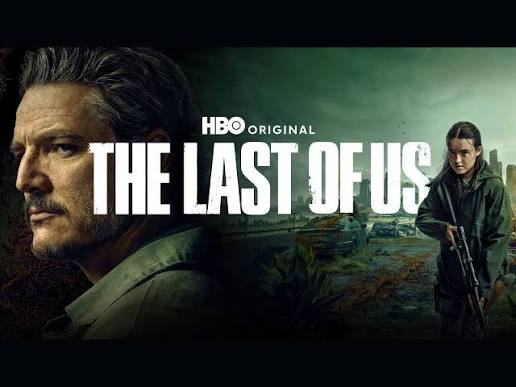
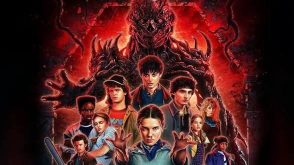
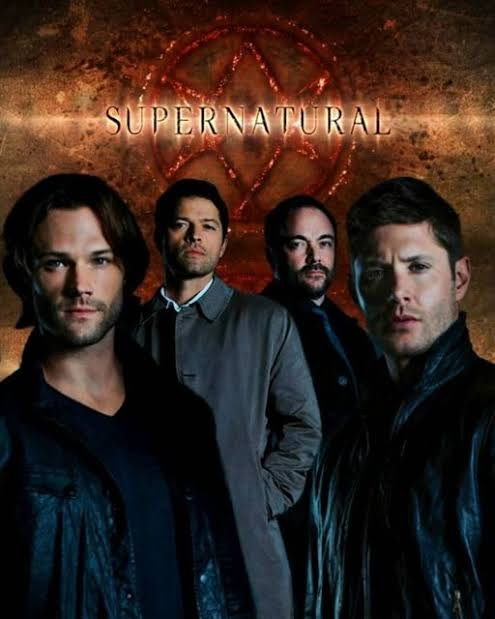
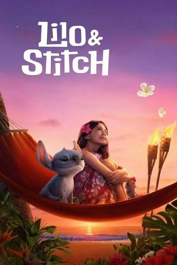
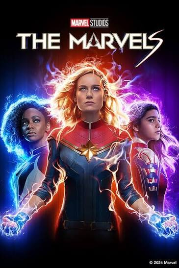

Descobre. Escolhe. Assiste. Maratona!

Estás à procura de emoção, mistério, aventura ou simplesmente de uma boa história para acompanhar?
Então chegaste ao lugar certo!
Bem-vindo ao Filmes e Séries, o teu espaço de entretenimento, onde reunimos grandes produções que conquistam espectadores em todo o mundo.
Aqui encontrarás recomendações, curiosidades, descrições e sinopses de filmes e séries que merecem a tua atenção.
Preparamos uma seleção especial de 10 títulos para te ajudar a escolher a tua próxima aventura. Continua a explorar e descobre qual deles combina contigo!

🖤 Género: Mistério, comédia e fantasia.
Uma série envolvente, marcada pelo suspense, humor sombrio e acontecimentos misteriosos.
📖 Sinopse:
Wandinha Addams chega à Academia Nunca Mais, uma escola especial onde tenta descobrir os segredos do seu passado. Enquanto desenvolve as suas habilidades, envolve-se numa investigação misteriosa que revela acontecimentos surpreendentes.
✨ Por que assistir?
Se gostas de mistérios, personagens peculiares e histórias cheias de reviravoltas, esta série pode ser uma excelente escolha!

🚀 Género: Ficção científica, aventura e mistério.
Uma aventura espacial que combina ciência, inteligência, descobertas e desafios extraordinários.
📖 Sinopse:
Um homem acorda numa nave espacial, longe da Terra, sem conseguir recordar claramente quem é ou como chegou ali. Aos poucos, descobre que tem uma missão extremamente importante: encontrar uma solução para salvar a humanidade de uma ameaça que coloca o futuro do planeta em perigo.
✨ Por que assistir?
É uma escolha interessante para quem gosta de espaço, ciência, enigmas e grandes aventuras.

🌿 Género: Drama, ficção científica e suspense.
Uma história intensa sobre sobrevivência, confiança, coragem e relações humanas num mundo transformado por uma pandemia.
📖 Sinopse:
Num mundo devastado por uma infeção, Joel recebe a missão de acompanhar Ellie, uma jovem que pode representar uma esperança para a humanidade. Durante a viagem, os dois enfrentam desafios e descobrem que a confiança e a união podem fazer toda a diferença.
✨ Por que assistir?
Se gostas de histórias emocionantes, personagens fortes e cenários pós-apocalípticos, esta série merece a tua atenção.

⚡ Género: Ficção científica, mistério, aventura e suspense.
Uma série cheia de acontecimentos inexplicáveis, amizades, experiências secretas e descobertas sobrenaturais.
📖 Sinopse:
Na pequena cidade de Hawkins, o desaparecimento misterioso de um rapaz dá início a uma sequência de acontecimentos extraordinários. Um grupo de amigos acaba por descobrir segredos assustadores relacionados com experiências secretas e uma dimensão desconhecida.
✨ Por que assistir?
É ideal para quem gosta de mistério, amizade, aventura e histórias surpreendentes.

👻 Género: Terror, fantasia, drama e suspense.
Uma série que mistura lendas, criaturas misteriosas, acontecimentos sobrenaturais e muita aventura.
📖 Sinopse:
Os irmãos Sam e Dean Winchester percorrem diferentes lugares enfrentando mistérios e investigando acontecimentos sobrenaturais. Durante a sua jornada, encontram criaturas lendárias e enfrentam desafios que colocam à prova a sua coragem e a ligação entre os dois.
✨ Por que assistir?
Se gostas de histórias sobrenaturais, mistérios e aventuras, Sobrenatural pode prender a tua atenção durante muitos episódios.

🏜️ Género: Ficção científica, aventura e drama.
Uma história grandiosa que combina política, poder, profecias, batalhas e disputas pelo controlo de um planeta desértico.
📖 Sinopse:
No universo de Duna, Paul Atreides enfrenta as consequências do seu destino e das suas escolhas. Num cenário marcado por conflitos e disputas pelo poder, o futuro de diferentes povos depende de decisões extraordinárias.
✨ Por que assistir?
Se gostas de mundos imaginários, grandes aventuras, estratégia e histórias épicas, Duna é uma excelente opção.

🦸 Género: Ação, drama, ficção científica e comédia negra.
Uma série que apresenta um mundo onde os super-heróis nem sempre são aquilo que parecem. Cheia de reviravoltas, conflitos e personagens complexas.
📖 Sinopse:
Num mundo onde os super-heróis são tratados como celebridades, alguns escondem comportamentos muito diferentes da imagem que apresentam ao público. Um grupo de pessoas decide revelar a verdade e enfrentar aqueles que abusam dos seus poderes.
✨ Por que assistir?
Se procuras uma história diferente sobre super-heróis, cheia de suspense, ação e surpresas, esta série pode despertar o teu interesse.

⚔️ Género: Fantasia, aventura, ação e drama.
Uma produção repleta de magia, monstros, reinos misteriosos, batalhas e destinos entrelaçados.
📖 Sinopse:
Geralt de Rívia é um caçador de monstros que percorre um mundo perigoso, onde humanos e criaturas fantásticas convivem em constante conflito. Ao longo da sua jornada, o seu destino cruza-se com o de pessoas que mudarão a sua vida.
✨ Por que assistir?
É uma excelente escolha para quem gosta de magia, criaturas fantásticas, aventuras e mundos medievais.

🌺 Género: Família, comédia, fantasia e aventura.
Uma história divertida e emocionante sobre amizade, família, aceitação e o verdadeiro significado de pertencer a alguém.
📖 Sinopse:
Lilo é uma menina havaiana que encontra uma criatura extraterrestre chamada Stitch. Apesar das suas diferenças e das confusões que surgem, os dois desenvolvem uma amizade especial e aprendem importantes lições sobre família e amor.
✨ Por que assistir?
Se gostas de histórias divertidas, personagens carismáticas e mensagens emocionantes, Lilo & Stitch é uma ótima escolha!

✨ Género: Ação, ficção científica, aventura e fantasia.
Uma aventura de super-heróis repleta de poderes extraordinários, viagens espaciais e desafios que colocam o universo em risco.
📖 Sinopse:
Carol Danvers, também conhecida como Capitã Marvel, vê os seus poderes ligados aos de outras duas heroínas: Monica Rambeau e Kamala Khan. Quando utilizam as suas habilidades, acabam por trocar de lugares, obrigando-as a trabalhar juntas para enfrentar uma ameaça.
✨ Por que assistir?
Se gostas de super-heróis, aventuras espaciais, ação e histórias do universo Marvel, este filme merece entrar na tua lista!
Já escolheste o que vais assistir?
Explora as nossas recomendações, descobre novas histórias e encontra o filme ou a série perfeita para o teu momento.
🍿 Prepara a pipoca, escolhe o teu favorito e aproveita o espetáculo!
O teu mundo de entretenimento começa aqui!